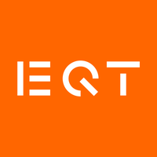
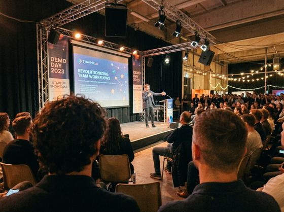
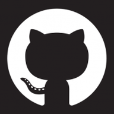

Your own content hire, inside your texts. It runs your whole LinkedIn so posting stops living in your head.

Draper joins your meetings, reads your notes and knows your calendar (Granola, Notion, Google Calendar), then turns what you actually said into LinkedIn posts. No prompts, no slop.
Send a voice note between meetings, or attach a photo straight in the chat. Draper writes it like you, uses the picture where it earns its place and shows you before it goes. Your whole LinkedIn, run from one thread

Draper sits in on your calls like a colleague with an ear for the good lines. Say one and the text is waiting when you hang up
You set the cadence once and the chasing becomes Draper’s job. It opens with one pointed question and refuses the safe answer, digging until it finds the thing worth posting. Two voice notes later the draft lands, in your words, minus the waffle
Timing is Draper’s from day one. The words are yours: approve every draft, then just a veto window, then it posts on its own, still sounding exactly like you
Learn moreThree arcs run your story: the person, the work, the market. It is the method our agency still runs for the founders below, and what they teach us each week goes back into Draper
Learn moreThe person. Where you came from, what you believe, what it cost

The work. What you are building, why it is hard, who it is for
The market. What changed this week, and what you saw first
Draper takes on a few new voices each week while it learns. Early members lock the founding rate of $100 a month for as long as they stay
No spam. One email when your seat opens. Want it sooner? Book a call and we will open one
We still run the agency. Human ghostwriters, 50+ founders, the numbers below. Draper runs that same craft, and every week on the agency floor sharpens it.
Numbers current as of July 2026, measured across the 50+ founder accounts the Draper team runs on LinkedIn.
"Draper is quietly becoming indispensable. That's the best compliment I can give."
"Traced enterprise contracts directly to Draper, plus top talent reaching out to Sahl AI."
"Something is working. You guys really tickled the algorithm there."
Everything worth knowing before you join the list.
Draper is a LinkedIn content strategist that works over text. It sits in on your meetings, finds the posts inside what you already said, writes them in your voice and schedules them. You approve from your phone.
Draper works on iMessage, WhatsApp and Telegram. You use whichever one you already text on, and there is nothing new to download.
A writing tool waits for a prompt. Draper starts the conversation. It joins your calls, notices the line worth posting, asks the follow-up question that gets the real story out of you, then drafts and schedules it. You never face a blank box.
They are built from your own words, taken from your meetings and voice notes. Draper also refuses to post filler. If nothing in the backlog earns the slot, it skips the day rather than publishing something forgettable under your name.
Founders and executives who are compelling in meetings but never get round to posting. It suits people whose best material comes out in conversation rather than at a keyboard.
At the start, yes. Draper earns autonomy as it learns you: approve every draft, then a veto window, then it posts to a cadence you set. Timing is Draper's from day one, and the words stay yours.
Draper is $100 a month, and early members keep that founding rate for as long as they stay. Access opens from the waitlist in small weekly cohorts, or book a call with the founders to skip ahead. For comparison, comparable AI tools run $19 to $149 a month and a human LinkedIn ghostwriter typically runs $800 to $6,000 a month.
Draper is built by the team that still runs Draper, a London agency where human ghostwriters run LinkedIn for over 50 founders. That agency has generated 350 million views and £20M in attributed revenue, and what it learns each week goes into the product. Draper is not an AI company guessing at content, it is a working agency that encoded its own method.